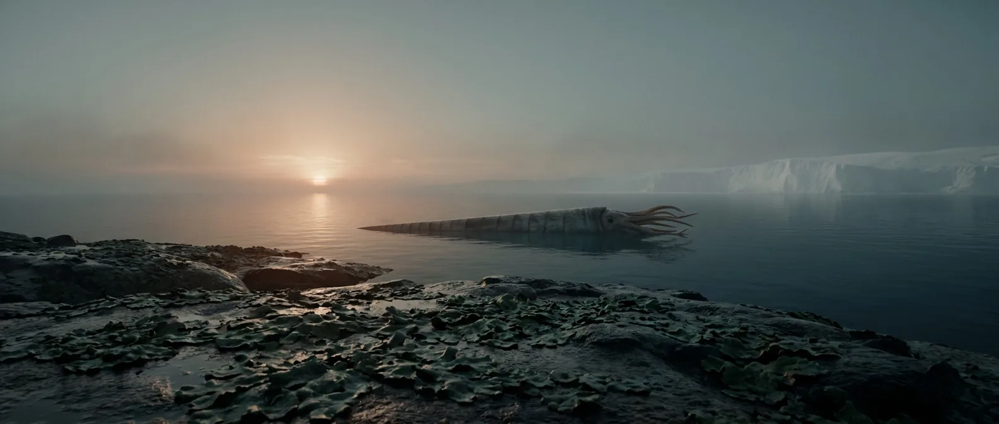
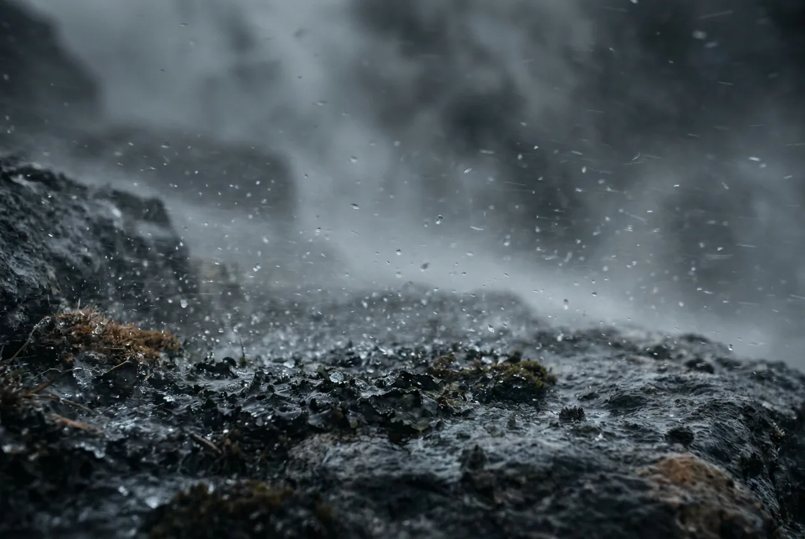
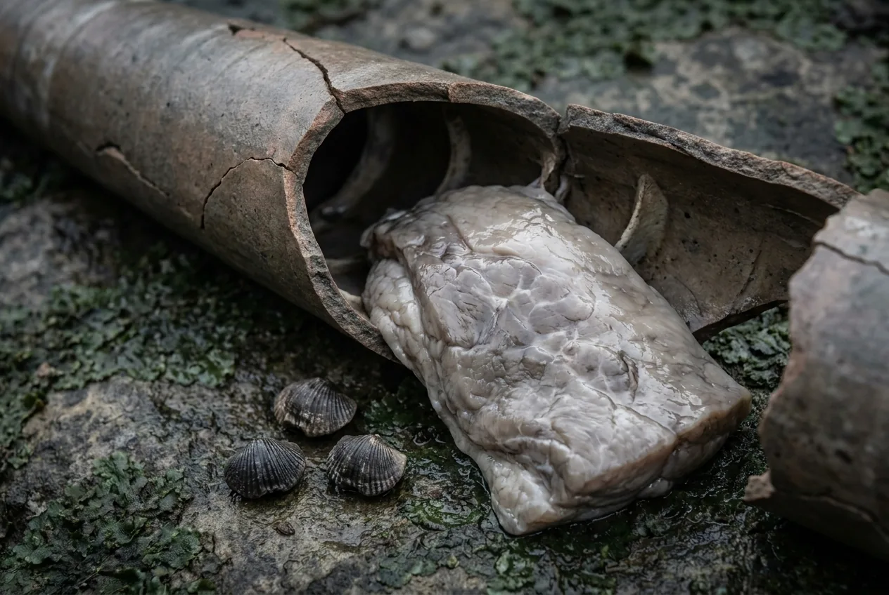

Life makes its first move onto land here, and it is not impressive: liverwort-grade plants, low and damp, hugging the water's edge. Offshore, straight-shelled nautiloids up to six metres long are the largest animals that have ever existed to this point.
Marginally better than the Cambrian. The first land plants are too small and too wet to burn, so you still have no fire, but the sea is far richer and cephalopods carry real fat. Arrive at 445 Ma instead and the glaciation halves it.

Scale 0–40%. Rising. Comparable to breathing at 2,000–3,000 m, which millions of people do permanently without difficulty.
Scale 0–4,000 ppm. Among the highest of the Phanerozoic, then falling sharply, plausibly because those first land plants started weathering rock and pulling carbon out of the air.
The Hirnantian glaciation at ~445 Ma is the second-worst extinction on record. Sea level dropped roughly 100 m and drained the shallow shelves where nearly everything lived.
Scale 0–30 m. Liverwort-grade, no roots, no vascular tissue, no way to stand up or hold water. Green, and completely useless to you.
Scale 0–24 h. About 412 days per year.
Scale 0–30 m. A shelled cephalopod the length of a small boat. Also, usefully, the fattiest thing available to eat.

There is finally something growing on land. It is a damp mat a couple of centimetres thick that cannot be dried, cannot be burned, and cannot be eaten in any useful quantity. The first plants are a milestone, not a resource.
Far better stocked than the Cambrian: dense reefs, crinoid meadows, big cephalopods. Cephalopod tissue carries real fat, which is exactly what the Cambrian was missing, and it buys you an extra week.
Still the fundamental problem. Wet rock, wind off the water, no way to dry out. Every night costs more calories than you can replace.
Not one dramatic failure: a slow negative balance of calories, warmth and sleep that no amount of shellfish reverses.
Ice sheets spread over Gondwana, sea level falls a hundred metres, and the shallow shelf you were feeding on becomes dry rock. Your food supply retreats kilometres offshore, and it is now cold. Two weeks, at best.
Stay in the mid-period, near a warm shallow shelf, and away from Gondwana.

Workable. Better than the Cambrian, and improving through the period.
Clean and abundant. Nothing in it has ever met a vertebrate, let alone a mammal.
Nautiloids, trilobites, brachiopods, early jawless fish. The first interval where a meal contains meaningful fat.
Still nothing dry enough to burn. Liverworts hold water by design.
Rock and sand. Unchanged since the Cambrian.
In the water, a six-metre nautiloid. On land, still nothing at all.